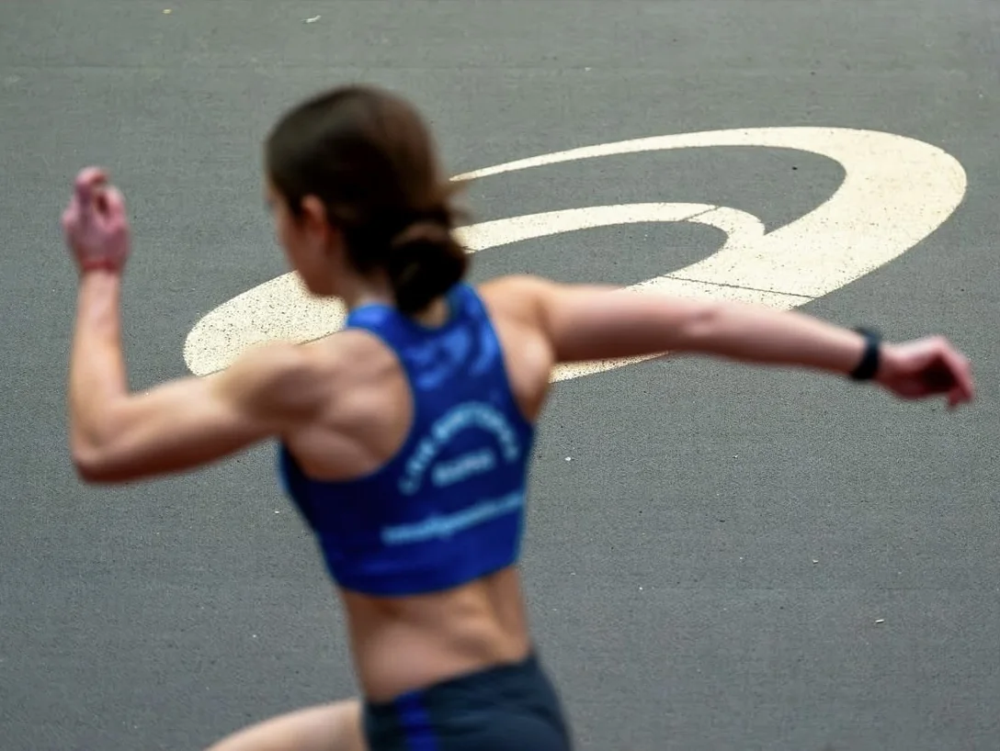

Editor, motion designer
and heptathlete.
I'm Vesselina Belcheva, a video editor and motion designer based in Varna, Bulgaria, working remotely with creators, coaches, agencies and brands.
I edit short-form and creator content, product ads and motion-graphics explainers. My favourite part is the craft that makes a video easy to watch: a hook that earns the next second, captions that read at a glance, graphics that explain and sound that gives every cut weight.
I know what the footage is for.
As a heptathlete I spend a lot of time training and watching how movement looks on camera. When a coach explains a cue, I know which rep shows it. When a runner reviews a watch, I know which stat the viewer cares about.
That saves rounds of notes and keeps the edit on what the coach or athlete is really saying. Outside sport I work the same way: understand the subject first, then edit so the audience gets it quickly.
Simple process, clear communication.
- 01Footage and goalYou send the raw files, the platform and any references.
- 02Story firstI find the hook and structure, and plan graphics and B-roll.
- 03First cut and notesYou review and send feedback. I keep you updated.
- 04Final deliveryExported in the formats and ratios you need.